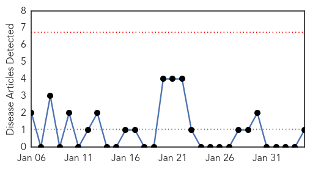
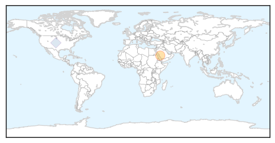
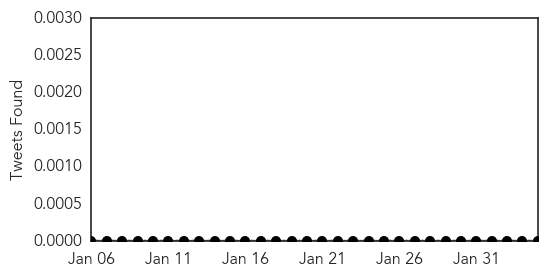

MERS
30-Day Web Trend
0 alerts, 0 warnings

30-Day Twitter Trend
1 alerts, 0 warnings

Article Locations
Article Confidences

Top Articles:
Top Tweets:
- 0.738
- RT: Qatar - Man, 55, tested positive for coronavirus MERS - fever + joint pain https://t.co/ux0aBKgCEK
- 0.535
- .@Who Emergency Committee on Middle East respiratory syndrome coronavirus - MERS - meets for the 8th time today. http://t.co/0TaswPxSap
Cholera
30-Day Web Trend
11 alerts, 6 warnings

30-Day Twitter Trend
3 alerts, 0 warnings

Article Locations

Article Confidences

Top Articles:
Top Tweets:
-
No tweets found for Feb 04, 2015